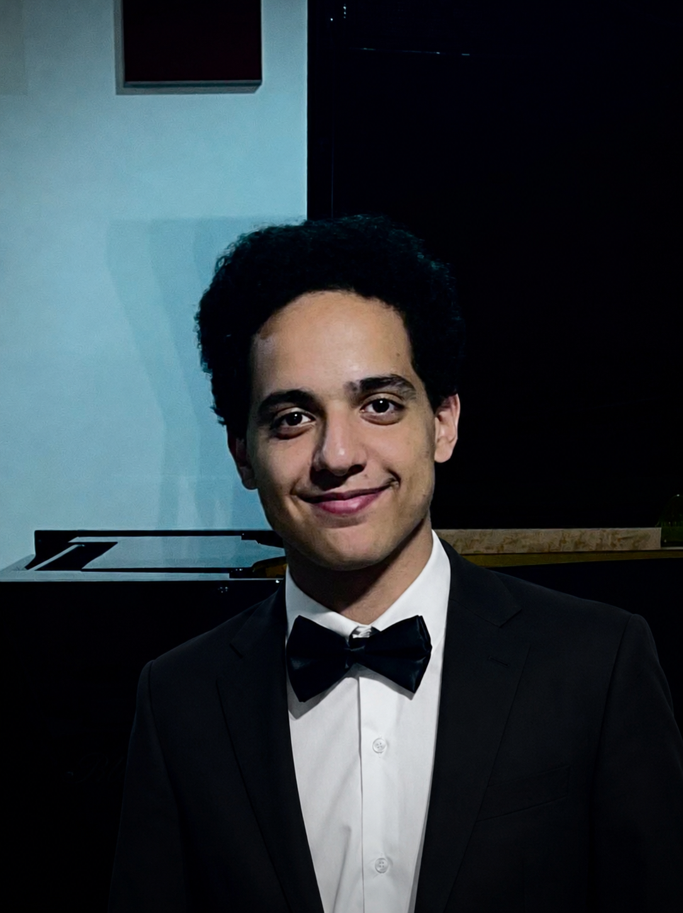

I'm Ali, a classically trained pianist and composer from Cairo. I write orchestral scores for games — battles, open worlds, quiet story moments, and everything in between.
Original music I wrote for existing game footage — the original scores are muted and replaced with mine. Each piece was written specifically for that scene.
Wrote this for the Thor fight sequence — wanted something that felt relentless from the first bar. Built on a driving string ostinato with brass hits layering in as the fight escalates.
An open-world exploration cue for Ghost of Yōtei — starts with just string harmonics and builds slowly through flute, harp, and solo horn. Meant to feel like you've just stepped into somewhere big and unknown.
Scored to the opening of Ori and the Blind Forest — one of the most emotionally clear pieces of visual storytelling in gaming. The music moves from warmth to loss to something close to hope, following the scene beat by beat.
Currently scoring an original soundtrack for a countdown-themed 2D cowboy shooter game jam — releasing in a few days.

I'm a concert pianist at the Cairo Opera House who got into game composing because I wanted to write music that actually does something — music that makes a moment land harder, a world feel real, a fight feel desperate.
My background is classical — I've won the Egyptian National Chopin Competition twice and placed in the Fujairah International Piano Competition — so the harmony, orchestration, and voice leading in what I write are built on a real foundation, not just layered sounds that happen to sound orchestral.
I write everything orchestrally, score it properly, and care about whether the music actually fits the scene. If you have a game that needs music that means something, let's talk.
What's it about, what does it feel like, what kind of music do you hear in your head when you picture it? I'll come back with ideas and a quote within a day.